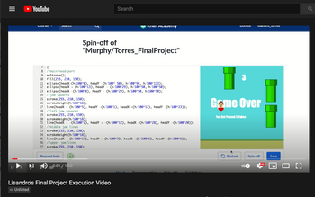

⬇️⬇️⬇️Final Project⬇️⬇️⬇️
For the final project, Jake Murphy and I created a game that is very similar to Flappy Game.
However, it has some differences; one of the most significant examples is that the tubes
are not static on the y-axis; instead, they’re randomly placed on the y-axis. Another
change is instead of using a bird as Flappy Bird. We decided to use my bitmoji that changes
shirt color(from red to blue) whenever the bitmoji is going up or down. To play the game is very simple as
the user would be received on the splash screen of the game, which shows both bitmoji that
we created throughout the semester. In between the bitmojis, the
user can click on the button “play,” which would transition the user to the playing scene. The
user would have my bitmoji as the main character to play the game on the playing
scene. To go up, the user can click the space bar on their computer, and to go down, they can
release the space bar. Lastly, the objective of the game is to go through the
tubes without colliding into the tubes. For every top and bottom tubes, the user would accumulate
one point into the user end the game throughout a collispion or exit the game.
Click on the Images!!!
 //dancing
//dancing
⬇️⬇️⬇️Final Video⬇️⬇️⬇️
